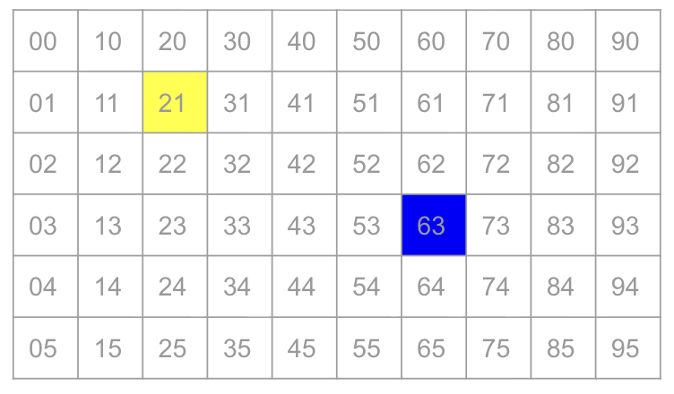
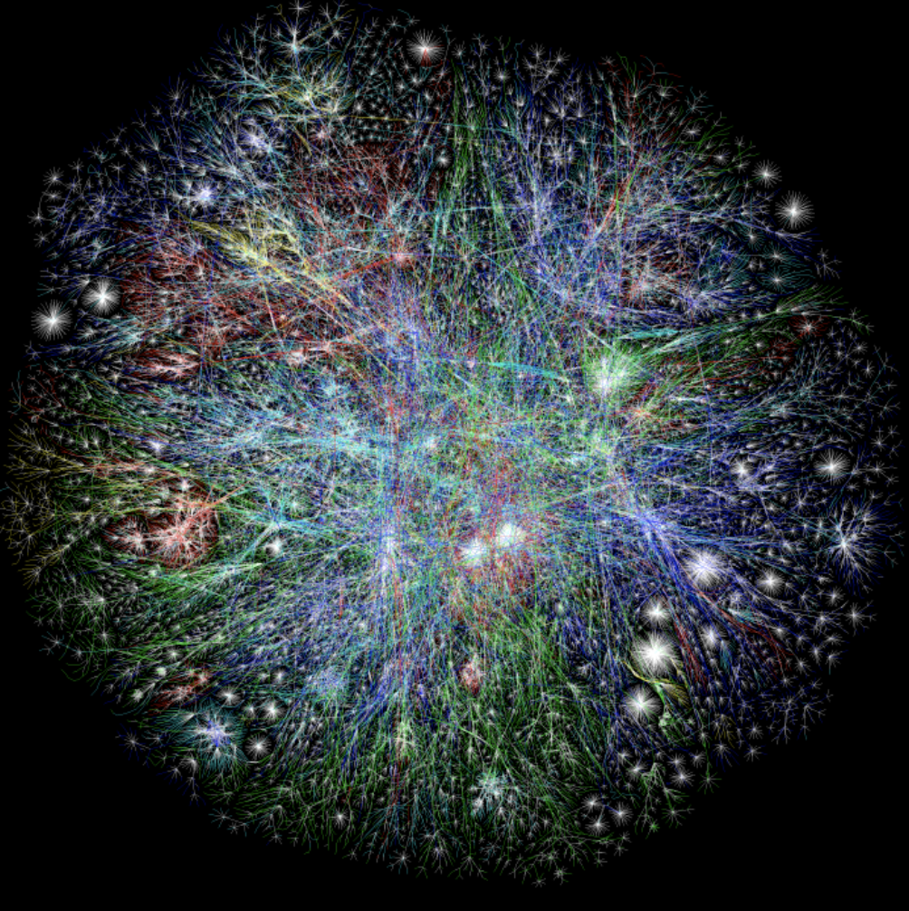
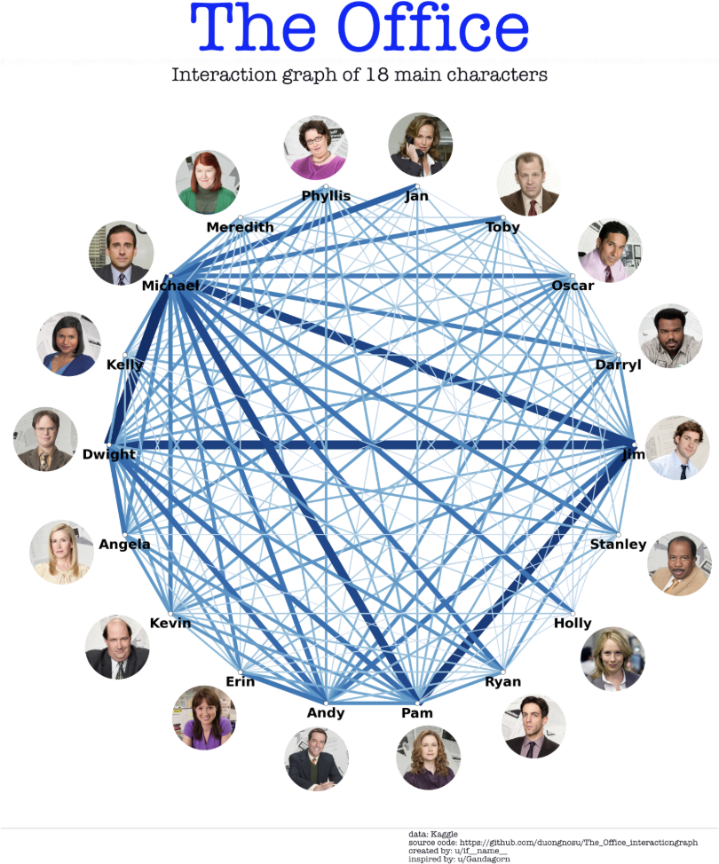
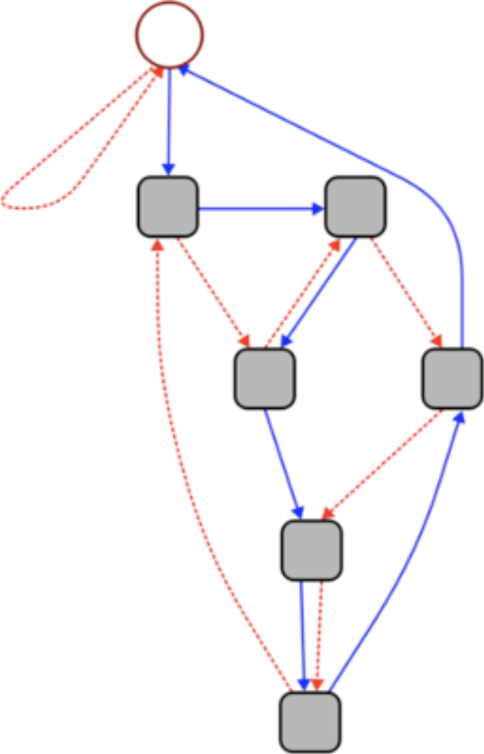
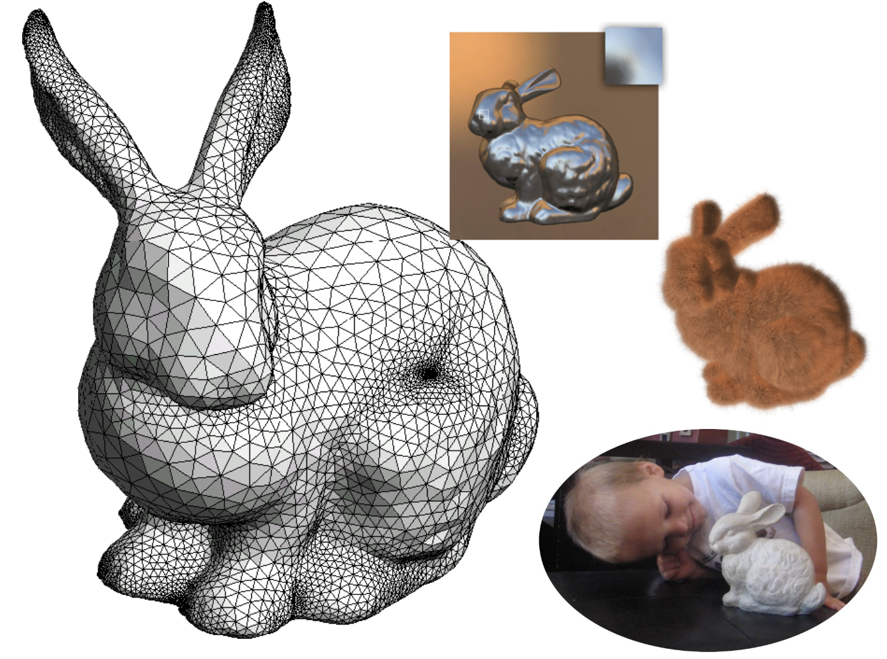
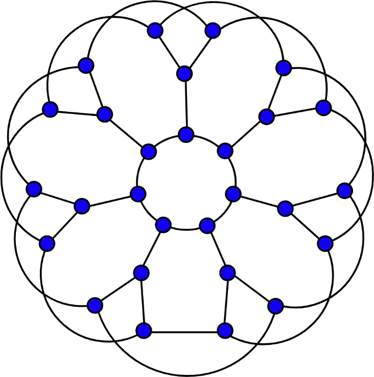
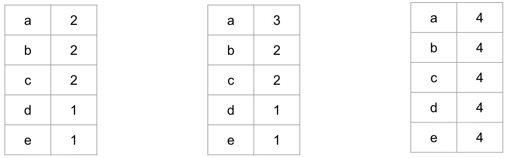
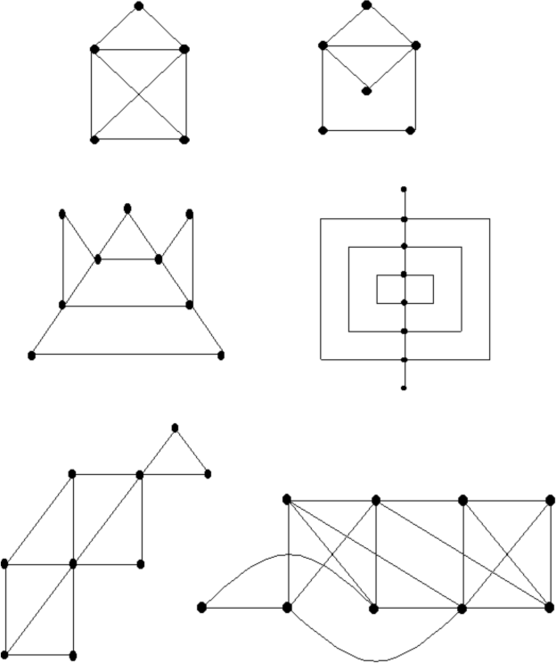

Week 9: Graphs!
This week we finished our Voronoi journey, zoomed out to see the bigger picture, and plunged into one of the most powerful ideas in all of computer science: graphs. We saw the same structure hiding inside the internet, scheduling systems, social networks, road maps, state machines, and 3D bunnies. Let’s go!
The Big Picture
Every problem we solve uses some combination of these tools:
- Representation — how we encode meaning
- Collections — how we group things
- Control flow — how we make decisions and repeat
- Functions — how we name and reuse logic
- Abstraction — how we hide complexity
- Efficiency — how we measure cost
This week: Graphs — a universal abstraction for relationships between things!
Tuesday: Voronoi Fin & The Graph Connection
Algorithm Analysis: How Fast Is Fast?
We left off last week with two algorithms for building Voronoi diagrams. Now we asked: how much faster is flood fill, really?
Let \(n = \text{width} \times \text{height}\) be the total number of pixels. Two algorithms:
| Step | Naive | Flood Fill |
|---|---|---|
| Read image | \(n\) | \(n\) |
| Choose centers | \(k\) | \(k\) |
| Build diagram | \(n \times k\) | \(n\) |
| Write image | \(n\) | \(n\) |
The difference is in that third row. Compare the growth of \(n \cdot k\) vs \(n\) as images get bigger:
| Image size | \(n\) | \(k = 1000\) centers | Naive work \(n \cdot k\) | Flood fill work \(n\) |
|---|---|---|---|---|
| 100 × 100 | 10,000 | 1,000 | 10,000,000 | 10,000 |
| 1000 × 1000 | 1,000,000 | 1,000 | 1,000,000,000 | 1,000,000 |
| 4000 × 3000 | 12,000,000 | 1,000 | 12,000,000,000 | 12,000,000 |
At 12 megapixels, naive needs 12 billion operations. Flood fill needs 12 million. That’s 1000× faster — the gap grows every time the image gets bigger.
We compared the functions \(y = x\) (flood fill’s cost) and \(y = x^2\) (naive cost, when \(k\) grows with \(n\)). Even though \(x^2\) is smaller for small inputs, \(x\) is always eventually faster. Algorithms that scale like \(n\) are called linear. Algorithms that scale like \(n^2\) are called quadratic. As \(n\) grows, this gap becomes enormous.
Voronoi Summary
Our Voronoi journey taught us:
- Voronoi Diagrams — a beautiful mathematical structure for dividing space by nearest neighbor, used to make algorithmic art!
- Naive algorithm — check every pixel against every center. Works, but costs \(n \cdot k\).
- Queue (FIFO) — Python’s
deque:append()to enqueue,popleft()to dequeue. - Flood Fill — start all centers simultaneously, grow outward. Costs just \(n\).
Images Are Graphs!
Here’s where something remarkable happened. Look at the flood fill image:

“In our images, every _______ is a vertex, and every _______ is an edge.”
Answer: every pixel is a vertex, and every adjacency (pair of neighboring pixels — up, down, left, right) is an edge. Our image is a graph!
Flood fill turns out to be a special case of Breadth-First Search (BFS) — a classic graph algorithm.
Breadth-first search (BFS) is an algorithm for traversing or searching tree or graph data structures. It starts at a root (or arbitrary node) and explores all neighbor nodes at the present depth before moving to nodes at the next depth level. — Wikipedia
Thursday: Graphs!
What Is a Graph?
A graph \(G = (V, E)\) is just two things:
- \(V\) — a set of vertices (also called nodes)
- \(E\) — a set of edges connecting pairs of vertices
That’s it. Deceptively simple. And yet, this structure appears everywhere.
Application 1: The Internet (circa 2003)

\(V\): Each web page is a vertex.
\(E\): Each hyperlink from one page to another is an edge.
Degree of a vertex: The number of links pointing to or from that page. Pages like Google have enormous degree — millions of links point to them!
The internet in 2003 had ~3.6 billion web pages. Drawing it all would be impossible — but the graph structure lets us reason about it mathematically, and algorithms like Google’s PageRank use graph theory to find important pages.
Application 2: A Conflict Graph

Imagine scheduling final exams. Two exams can’t happen at the same time if any student is taking both courses.
\(V\): Each course is a vertex.
\(E\): Two courses are connected by an edge if they share at least one student — a scheduling conflict.
Vertex labels: Course codes (CPSC 110, MATH 221, etc.)
Neighbors of a vertex: All courses that conflict with this one — courses you can’t schedule at the same time.
Graph coloring: Assign time slots (colors) to courses so no two connected vertices share a color. The minimum number of colors needed is the chromatic number. This is a hard computational problem!
Application 3: A Complete Graph

\(V\): Five vertices (perhaps 5 people at a party, all meeting each other).
\(E\): Every possible pair of vertices is connected — all possible edges.
Complete graph: A graph where every vertex is connected to every other vertex. Written \(K_n\) for \(n\) vertices.
How many edges in \(K_n\)? Each vertex connects to \(n-1\) others, giving \(n(n-1)\) endpoint-pairs. But each edge has 2 endpoints, so we divide by 2: \[|E| = \frac{n(n-1)}{2}\] For \(K_5\): \(\frac{5 \times 4}{2} = 10\) edges. For \(K_{100}\): 4,950 edges!
Application 5: Rush Hour 🚗


\(V\): Each game configuration (arrangement of all cars on the board) is a vertex.
\(E\): Two configurations are connected by an edge if you can move from one to the other with a single valid move.
Path: A sequence of vertices (configurations) connected by edges (moves) — a solution to the puzzle is a path from the starting configuration to a winning configuration!
This is the key idea: graph search = problem solving. BFS on this graph finds the shortest solution to Rush Hour!
Application 6: A State Machine (Divisibility by 7!)

This graph can check whether a number is divisible by 7 — without doing division!
Rules:
- Start at the circle vertex (remainder 0)
- For each digit \(d\) in the number, follow \(d\) solid edges in succession
- Between digits, follow 1 dashed edge
- If you end at the circle vertex, the number is divisible by 7!
Try it with 3703:
| Step | Action | Current State |
|---|---|---|
| Start | — | 0 |
| Digit 3 | Follow 3 solid edges | 3 |
| Between digits | Follow 1 dashed edge | 30 mod 7 = 2 |
| Digit 7 | Follow 7 solid edges | (2×10 + 7) mod 7 = 0 |
| Between digits | Dashed edge | 0 |
| Digit 0 | Follow 0 solid edges | 0 |
| Between digits | Dashed edge | 0 |
| Digit 3 | Follow 3 solid edges | 3 |
Hmm, end at 3… but wait: \(3703 / 7 = 529\). ✓ It is divisible! Let me recheck the path — the magic is in how the graph encodes modular arithmetic. Each vertex represents a remainder mod 7 (0–6). Each transition applies “append digit \(d\)”: new remainder = \((10 \times \text{old} + d) \mod 7\).
This is a directed graph — edges have direction (arrows), unlike the undirected graphs above.
Application 7: The Stanford Bunny 🐰

\(V\): Points on the surface of the 3D object.
\(E\): The edges of the triangular mesh connecting nearby surface points.
Planar graph: A graph that can be drawn in 2D (on a flat plane) without any edges crossing each other.
3D meshes used in animation, video games, and medical imaging are all graphs! The Stanford Bunny has ~70,000 vertices and ~140,000 edges, and it’s planar — you can “unfold” the surface flat without crossings.
Graph Theory
How Many Edges Can a Graph Have?
For a connected graph with \(n\) vertices, we worked out the bounds:
At least \(n - 1\) edges — because the graph must be connected. A connected graph with exactly \(n-1\) edges is called a tree (no cycles, one path between every pair of vertices).
At most \(\frac{n(n-1)}{2}\) edges — the complete graph \(K_n\), where every vertex connects to every other.
For \(n = 100\) vertices:
- Minimum: 99 edges (a tree)
- Maximum: 4,950 edges (\(K_{100}\))
The Handshaking Lemma 🤝

The degree of a vertex is the number of edges touching it. These are all equivalent:
- Number of neighbors
- Number of incident edges
- The degree
Handshaking Lemma: The sum of all vertex degrees equals twice the number of edges: \[\sum_v \deg(v) = 2|E|\]
Why? Every edge contributes exactly 2 to the total degree sum — one for each endpoint.
Example: Suppose a graph has 28 vertices, each with degree 3.
\[\sum \deg = 28 \times 3 = 84 \qquad |E| = 84 / 2 = \mathbf{42} \text{ edges}\]
The sum of degrees is always even (it equals \(2|E|\)). Therefore, the number of odd-degree vertices is always even. You can never have exactly 3 vertices with odd degree — try it!
Degree Sequences and Havel-Hakimi

Suppose your graph shatters, and all you know is the degree of each vertex. Can you reconstruct the graph?
Given a degree sequence (a sorted list of degrees), the Havel-Hakimi algorithm determines whether a valid graph exists — and if so, constructs one.
Try it: Havel-Hakimi interactive
Sometimes the answer is “impossible” — for example, 5 vertices each with degree 3 violates the Handshaking Lemma (odd sum 15). You cannot draw this graph!
Pencil Puzzles: Euler Paths ✏️

The challenge: trace each graph without lifting your pencil and without revisiting any edge.
Can all graphs be traced this way? No! What determines whether a graph can be traced?
A graph can be traced (has an Euler path) if and only if it has 0 or 2 vertices with odd degree:
- 0 odd-degree vertices → Euler circuit (start = end)
- 2 odd-degree vertices → Euler path (start and end at the odd-degree vertices)
- 4+ odd-degree vertices → impossible to trace without repeating an edge
This was proved by Leonhard Euler in 1736 — one of the first theorems in graph theory!
Class Activities 🖥️
In Thursday’s PrairieLearn activity, you practiced these ideas hands-on:
Handshaking (Part 1): Given a randomly generated graph, you computed the degree of each vertex, summed them all, counted edges — and confirmed that sum of degrees = \(2 \times\) edges. Every time!
Handshaking (Part 2): Applied the lemma directly: given \(n\) vertices each with degree \(d\), compute the number of edges using \(\frac{n \cdot d}{2}\).
Edge Bounds: Worked out the minimum and maximum number of edges for connected graphs with 3, 4, 6, and \(n\) vertices, arriving at the general formulas \(n-1\) (tree) and \(\frac{n(n-1)}{2}\) (complete).
Euler Paths: Given four graphs, determined which could be traced (and found a valid path) and which couldn’t:
| Graph | Odd-degree vertices | Answer |
|---|---|---|
| Graph 1 | A(2), B(2), C(4), D(2), E(2) — all even | Euler circuit exists, e.g. ABCDESRCP |
| Graph 2 | A(3), B(2), C(3), D(2) — 2 odd | Euler path exists from A to C, e.g. ABCDAC |
| Graph 3 | A(4), B(2), C(4), D(2), E(3), F(2) — wait, let’s count… | Euler circuit exists (all even) |
| Graph 4 | All degree 3 — 4 odd vertices | XXX — impossible! |
Quick Reference
Graph Vocabulary
| Term | Definition |
|---|---|
| Vertex / Node | A point in the graph |
| Edge | A connection between two vertices |
| Degree | Number of edges touching a vertex |
| Path | A sequence of vertices connected by edges (no repeated edges) |
| Connected | Every vertex is reachable from every other |
| Component | A maximal connected subgraph |
| Complete graph \(K_n\) | Every vertex connected to every other; \(\frac{n(n-1)}{2}\) edges |
| Tree | Connected graph with no cycles; exactly \(n-1\) edges |
| Planar graph | Can be drawn in 2D without edge crossings |
| Euler path | Uses every edge exactly once |
| Euler circuit | Euler path that starts and ends at the same vertex |
The Key Formulas
\[\sum_v \deg(v) = 2|E| \quad \text{(Handshaking Lemma)}\]
\[n - 1 \leq |E| \leq \frac{n(n-1)}{2} \quad \text{(edges in a connected graph)}\]
\[\text{Euler path exists} \iff \text{exactly 0 or 2 vertices have odd degree}\]
What’s Next?
Week 10: We keep exploring graphs with new algorithms — expect more clever problem-solving!
EX3 was this week — hope it went well! Review with PEX3 if you want more practice.
Project 2 is available — start early!